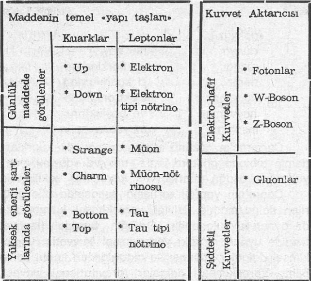

ATOM-ALTI FİZİĞİNDE GÜNCEL GELİŞMELER
Fritjof Capra'nın bu kitabı, kendi dünya görüşünü ifade ettiği , en önemli eseridir. Ancak böyle olmakla beraber, kitabın ilk baskı yılı da hayli eskidir. 1974'de kitap bitmiş ve hemen ardından diğer baskılarına geçilmiştir. Pek tabii bu uzunca süre içinde (bu on beş yıldan uzun bir süredir), modern fizik dalında pek çok yeni ve bir o kadar da çarpıcı bulgular ortaya çıkmıştır. Benim bu ilâvedeki amacım, Capra'nın kitabı yazmış olduğu tarihten bu yana fizik alanında ortaya çıkan çok önemli bir iki konuya temas etmek ve böylece, günümüz okuyucusuna izafiyet fiziği ile Kuantum fiziği dalında en yeni bilgileri aktarabilmektir. Bu bağlamda, bu ilâveyi bir çeviren « bilmişliği» olarak değerlendirmeyeceğinizi ümit etmek istiyorum.
Çok yakın bir tarihe kadar bilim adamları, ve bu arada Capra da, maddenin «temel yapı taşlarını» sürekli ikiye ayırmışlar ve böylece söz konusu «yapı taşları», leptonlar ve hadronlar diye iki bölüm halinde değerlendirilmiştir. Capra'nın da anlattığı gibi, leptonlar, hiç bir uzaysal büyüklüğe sahip olmayan ve ayrıca şiddetli kuvvetler ile etkileşmeyen parçacıklar olarak görülmektedir (elektronlar ve nötrinolar gibi). Hadronlar ise, her dört kuvvet türüne maruz kalabilen ve belirli bir uzaysal büyüklüğe sahip olan parçacıklardır (protonlar ve nötronlar gibi).
Ancak bu yaklaşım, yavaş yavaş terk edilmektedir. Çünkü Fritjof Capra'nın kuarklar ile ilgili olarak ortaya koyduğu çekingenlik, bilimsel çevrede artık aşılmaya başlanmıştır. Örneğin Avrupa Çekirdeksel Araştırmalar Merkezi CERN'deki çalışma gurupları çalışmalarını yoğun -bir biçimde, varlıklarını kabul ettikleri kuarkların ispatına yöneltmişlerdir. Hâlihazırda bu ispatlama yalıtılmış kuarklarda gerçekleştirilememiş olsa bile, kuarkların sadece hadronların içlerinde var oldukları gerçeği artık teslim edilmiştir. CERN'dekilere göre, bir kuark ve bir karşıt -kuarktan meydana gelen hadronlara «meson» ismi verilmektedir. Yani leptonlar ve hadronlar diye yapılan genel ayırım, leptonlar ve kuarklar olarak değiştirilmiştir. Bu yeni ayırım artık bilimsel literatüre girmiş bulunmaktadır. Ancak kuarklar ve leptonlar da kendi aralarında bağımsız dörtlü guruplara (ya da ailelere) ayrılmaktadırlar. Örneğin bu biçimde günlük çevrenizde olup biten her şey, tek bir gurup ya da aile yardımı ile açıklanmaktadır. Bu grupta, şu temel öğeler bulunmaktadır:
— «up» — kuark
— «down» — kuark
— elektron
— elektron tipi nötrino.
Doğal ortamda ya da yapay hızlandırıcı ortamlarında bulunan daha yüksek enerji değerlerinde, bu kuark-lepton dörtlüsüne iki adet değişik dörtlü gurup daha eklenmektedir. Bunlar, «gündelik hayatta» görülen dörtlülerin daha «ağır» türleridir. Söz konusu parçacıklar kümesi arasındaki kuvvet etkileşimi ise, aktarıcı parçacıklar vasıtası ile gerçekleşmektedir. Bunlar ise, yeni görüşe göre fotonlar, bosonlar ve gluonlar diye isimlendirilmektedirler.
Tablodan izlenebildiği gibi, kuark-lepton sınıflaması hem tam bir temele oturmuş ve hem de kuvvet aktarıcı parçacıklarda çok önemli bir ikili ayrıma gidilmiştir. Şöyle ki: Kuvvet aktarıcıları, artık sadece şiddetli kuvvetleri ve «elektro-hafif» kuvvetleri kapsamaktadırlar. Yani doğadaki bütün kuvvetler, sadece iki tane ana guruba indirgenebilmiştir.

Bu, yakın fiziksel tarihimizin çok çok önemli bir başarısıdır.(1). Şiddetli kuvvetlere «gluon» ismi verilirken, elektromanyetik kuvvetlerin dışında kalan hafif kuvvetlerin de W ve Z türünden iki tane boson ile aktarıldığı bulunmuştur. Bu bulgu, 1983 yılında CERN'de bilimsel ve deneysel olarak ispat edilmiştir. Bundan dolayı, ünlü İtalyan fizikçi Carlo Rubbia ile Hollanda'lı teknoloji uzmanı Simon van der Meer'e 1984 yılı Nobel ödülü lâyık görülmüştür. W-bosonu, elektriksel bir yük taşımaktadır ve protonunkinin doksan katı bir kütleye sahiptir. Z-bosonu ise nötrdür ve protona göre yüz kat daha çok kütle içerir. Bu biçimde elektromanyetik kuvvet ile hafif çekirdeksel kuvvet birleştirilebilmiş ve «elektro-hafif» (electro-weak) kuvvet olarak isimlendirilmiştir(2).
Bu bağlamda ünlü fizikçi Rafel Carreras şu çarpıcı anlatımda bulunmuştur:
«gökyüzü
dünya her şey
rüzgâr u kuarklardan
deniz d kuarklardan
ağaçlar elektronlardan
hayvanlar ve boşluktan
insanlar meydana gelir»(3)
Carreras'ın sözünü ettiği «u» ve «d» kuarkları, demin tabloda gösterdiğimiz «up» ve «down» (yani, yukarı ve aşağı) kuarklarının kısaltılmış şekilleridir.
Capra'nın yaptığı tartışma esnasında dile getirilen dalga/madde ikililiği, yerçekimsel kuvvet için de aynen uygulanabilir. Örneğin burada (izafiyet fiziğine uygun olarak) yerçekimsel kuvvetin, yerçekimsel dalgalar vasıtası ile aktarıldıkları kabul edilebilir. Yerçekimsel dalgalar (gravitational waves), günümüzde elektromanyetik dalgalar gibi durağan ve değişken olarak ikiye ayrılırlar. Durağanlara örnek olarak yerçekimi alanı gösterilebilir. Değişkenlere bir örnek ise, ışık hızıyla hareket eden yerçekimi dalgalarıdır. Hareket eden bir nesne, ivmesine ve elektriksel yüküne bağlı olarak elektromanyetik dalga yaymaktadır. Böyle bir nesnenin yerçekimsel dalga yayması ise, onun kütlesine ve ivmesine bağlıdır. Ancak, momentum korunumunun bir sonucu olarak yalıtılmış bir sistemin net ivmesi sıfır olacaktır. Fakat bu etki-tepki her zaman eşit olmamakta ve bazı durumlarda etkiye karşı tepki ile beraber az bir hareket ortaya çıkmaktadır. Bu hareket genellikle ivmeli olup yerçekimsel ışınıma, yani yerçekimsel dalga yayımına neden olur. Yerçekimsel dalgalar ise, geçtikleri herhangi bir ortamın şeklini hareket yönüne dik bir düzlem boyunca değiştirirler. Bu değiştirme, birbirine dik yönde sıkıştırma ve genleştirme biçiminde olup dalganın şiddetine ve frekansına bağlıdır(4).
TÜBİTAK'tan Hanaslı Gür ise, yayınladığı bir makale dizisinde, kuantum dünyasının çarpıcı, kendi deyimi ile «acayip» yönlerini ortaya koymaya çalışmıştır. İşte bu çerçevede «kuantum koanlarına» güncel örnekler olarak şu deneyleri gösterebiliriz(5):
1) Kutuplayıcı filtre kullanılıyorsa ve bunlar kırk beş derecelik bir açıyı oluşturuyorlarsa; deney amacı ile birbirlerine dik ve ters yönde «uçan» iki adet fotonun her birisi ya hep beraber bu filtreden geçecek ya da geçmeyecektir. Fotonlardan birinin geçip, diğerinin geçmediği bir sonuç olmayacaktır. Yani birbirinden ayrı fotonlar, diğer parçanın da ne yapacağını uzaklığa bağlı olmadan «bilmektedirler».
2) Belirsiz bir özellik, nasıl ve ne zaman belirli bir hale gelir? Wheeler'in cevabına göre, «Hiç bir temel Kuantum olayı, kaydedilmiş bir olay olana dek gerçek bir olay değildir». Başka bir deyişle, belirsizlikten belirliliğe geçiş, fotoğraf eriyiğindeki bir taneciğin kararması gibi «artık geri çevrilemeyen bir büyüme etkisi» olmadıkça, tam değildir.
3) Klasik fiziğe göre, bir engel ile ayrılmış iki değer arasındaki geçiş, bir dış enerji gerektirmektedir (bir topu bir tepenin üzerinden atmak gibi). Oysa Kuantum mekaniğine göre bu engel, herhangi bir dış enerji kaynağı olmadan da «tünel» olayı denilen bir etki ile geçilebilir. Nitekim manyetik akışların süper iletkenlerde gösterdikleri belirsizlik bundan dolayıdır. Ayrıca atomsal etkilerin bir çoğu da bu tünel olayı yardımı ile açıklanabilmektedir.
Bu anlatıların dışında, 1986'da Physical Review Letters'ın (Fiziksel Haber Bülteni) Ocak sayısında, doğada şimdiye kadar tanınmayan bir kuvvetin, her türlü nesnelerin değişik hızlarda yere düşmelerine neden olacak biçimde yerçekimine karşı çıkmakta olabileceği iddia edilmiştir.
Örneğin dünya yüzeyindeki yerçekimsel kuvvetin, Avustralya'nın derin madenlerdekinden yüzde bire ulaşan bir oranda az olduğu görülmektedir. Ayrıca çekirdek-altı parçacıklarla yapılan deneylerde de buna benze çok ilginç sonuçlar ortaya çıkmıştır. Bu farklılıkları hesaplamak için fizikçiler, hiper-yük (hyper-charge) olarak adlandırılan karşıt-yerçekimsel bir kuvvetin varlığını ileri sürmüşlerdir. Yerçekiminden daha zayıf olan bu kuvvetin etkisi, bir nesnenin proton ve nötronlarını itmek suretiyle belirmektedir. Yani proton ve nötronu daha az olan bir madde, bu öğeleri daha fazla olanlara oranla daha çabuk yere düşecektir. (6). Yani doğada bilinen ve Capra'nın çok güzel biçimde açıkladığı dört kuvvet etkisinin dışında bir de beşinci bir kuvvetin varlığı (ki bu hiper-yüktür) tartışılır hale gelmiştir bilimsel çevrelerde.
Son olarak Capra'nın Leibniz atıfına değinmek istiyorum. Capra, Leibniz Monadolojisi'ne atıfta bulunarak, monadoloji felsefesini Uzak Doğu görüşü ile karşılaştırmıştır. Ancak pek ünlü Batı filozofları arasında monadoloji kavramına sıcak bakan sadece Leibniz değildir. Ünlü aydınlanma çağı filozofu büyük «temizleyici» Immanuel Kant bile kendince bir monadoloji geliştirmiştir.
Kant, 1756'da yazdığı «Physische Monadologie» (Nesnel Monadoloji) isimli eserinde, günümüz modern fiziğine çok yaklaşan ve hatta Uzak Doğu felsefeleri ile büyük bir uyuşum gösteren bir dünya görüşü ortaya koymuştur. Kant burada, Leibniz'in kullandığı «monad» kavramını yeniden ele almıştır. Böylece gerçekleştirdikleri hareket ile dünya yapısını meydana getiren en küçük parçacıkların özelliklerini ve niteliklerini daha yakından incelemek istemiştir. Bu bağlam içinde Kant, adı geçen parçacıkların özelliklerini «uzayı dolduran bir kuvvet» olarak tanımlamıştır. Kant'a göre maddenin cisimliliğini ve geçirmezliğini belirleyen nitelik ve özellik, bir kuvvettir. Yani, doğada «cisim» ya da «öz» diye bir şey yoktur. Sadece kuvvet (yani, enerji) vardır. Kant'ın bu görüşü, çağımız fiziğinde sansasyonel bir biçimde yeniden doğrulanmıştır. Zaten Fritjof Capra'nın elinizdeki kitabı da, bu tecrübeyi belgelemektedir. Çünkü Capra'nın da anlattığı gibi, modern fizik, maddeyi enerjinin bir biçimi olarak görmekte ve bunların ikisinin de serbestçe birbirlerine geçebildiklerini savunmaktadır(7). Görüleceği gibi, Kant'ın doğa bilimsel ve gayrı metafiziksel monadoloji yaklaşımı, atom-altı ve izafiyet fiziğinde ortaya çıkan gelişmelerle en büyük destekçisini bulmuştur.
Kaan H. ÖKTEN Mart 1991
EK 1’E KAYNAKÇA
(1) CERN: İn Bildern, s. 2-5, Genf, 1986.
(2) CERN : European Laboratory for Partide Physios, s. 14-15, Geneva, 1985.
(3) Carreras, R.: How Energy Becomes Matter, s. 34, CERN/Geneva 1986.
(4) TÜBİTAK: Bilim ve Teknik Dergisi, s. 9, Nisan 1988 (M. Karaman: «Bilimde Yeni Bir Pencere: Gravitasyonel Dalgalar»), (Dilinde bazı değişiklikler yaptım).
(5) TÜBİTAK : Bilim ve Teknik Dergisi, s. 22-28, Haziran 1988 (Gür, H.: «Kuvantum Dünyası Gerçek midir?»), («Kuvantum» terimini, «kuantum» olarak değiştirdim. Derleme yaptım.).
(6) TÜBİTAK : Bilim ve Teknik Dergisi, s. 8, Nisan 1986 («Fizikteki Beşinci Kuvvet», çev. C. Varlık), (derleme yaptım).
(7) Störig, H. J.: Kleine Weltgeschichte der Philosophie, s. 338, Fischer Vertag, 1987.